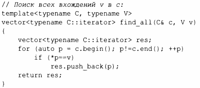
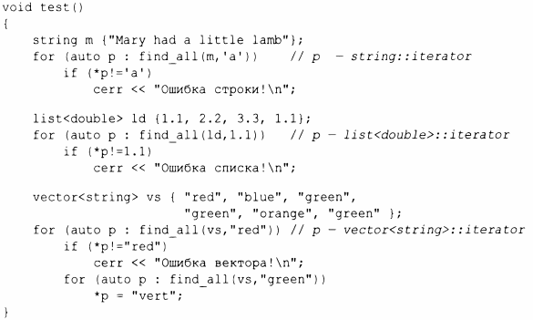

⇐12.1 Введение 12.3 Типы итераторов⇒
Для контейнера можно получить несколько итераторов, ссылающихся на полезные элементы; begin () и end () - лучшие тому примеры. Кроме того, многие алгоритмы возвращают итераторы. Например, стандартный алгоритм find ищет значение в последовательности и возвращает итератор найденного элемента:
Как и многие другие алгоритмы поиска стандартной библиотеки, find возвращает end() , чтобы указать, что поиск завершился неудачно и искомый элемент не найден. Эквивалентное, более короткое определение has_с() имеет следующий вид:
Более интересным упражнением был бы поиск местоположений всех вхождений символа в строку. Мы можем вернуть множество вхождений как вектор итераторов строк. Возврат вектора эффективен, потому что вектор обеспечивает семантику перемещения (§5.2.1 ). Предполагая, что мы захотим изменить символы в найденных местоположениях, мы передаем неконстантную строку:
Мы проходим по строке с помощью обычного цикла, перемещая итератор р вперед по одному элементу за раз с использованием оператора ++ и просматривая элементы с помощью оператора разыменования *. Мы могли бы проверить работоспособность find_all() следующим образом:
Этот вызов find_all () графически можно представить следующим образом.
Итераторы и стандартные алгоритмы работают одинаково с каждым стандартным контейнером, для которого их использование имеет смысл. Следовательно, можно обобщить функцию find_аll():
Ключевое слово typename необходимо, чтобы сообщить компилятору, что итератор С::iterator представляет собой тип, а не значение некоторого типа, например целое число 7. Эту деталь реализации можно скрыть, вводя псевдоним типа (§6.4.2) для Iterator:
Теперь можно написать следующий код:
Итераторы используются для разделения алгоритмов и контейнеров. Алгоритм управляет своими данными через итераторы и ничего не знает о контейнере, в котором хранятся элементы. И наоборот, контейнер ничего не знает об алгоритмах, работающих с его элементами; все, что он делает, - это предоставляет итераторы по запросу (например, begin () и end () ). Такая модель разделения хранилища данных и алгоритма обеспечивает очень обобщенное и гибкое программное обеспечение.